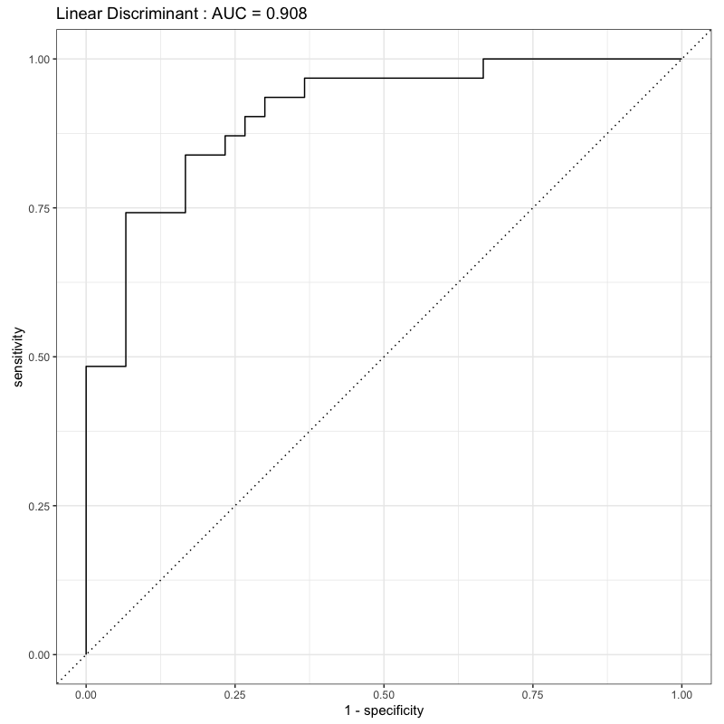

判別分析
分析の評価
(Press ? for help, n and p for next and previous slide)
講義の内容
- 第1回 : 判別分析の考え方
- 第2回 : 分析の評価
判別分析の復習
判別分析
- 個体の特徴量から その個体の属するクラスを予測する関係式を構成
- 事前確率 : \(\pi_k=P(Y=k)\) (prior probability)
- \(X=\boldsymbol{x}\) が与えられる前に予測されるクラス
- 事後確率 : \(p_k(\boldsymbol{x})\) (posterior probability)
\(X=\boldsymbol{x}\) が与えられた後に予測されるクラス
\begin{equation} p_k(\boldsymbol{x})=P(Y=k|X=\boldsymbol{x}) \end{equation}- 所属する確率が最も高いクラスに個体を分類
判別関数
- 判別の手続き
- 説明変数 \(X=\boldsymbol{x}\) の取得
- 事後確率 \(p_k(\boldsymbol{x})\) の計算
- 事後確率最大のクラスにデータを分類
判別関数 : \(\delta_k(\boldsymbol{x})\) (\(k=1,\dots,K\))
\begin{equation} p_k(\boldsymbol{x}) < p_l(\boldsymbol{x}) \Leftrightarrow \delta_k(\boldsymbol{x}) < \delta_l(\boldsymbol{x}) \end{equation}事後確率の順序を保存する計算しやすい関数
- 判別関数 \(\delta_k(\boldsymbol{x})\) を最大化するようなクラス \(k\) に分類
線形判別
- \(f_k(\boldsymbol{x})\) の仮定
- \(q\) 変量正規分布の密度関数
- 平均ベクトル \(\boldsymbol{\mu}_k\) : クラスごとに異なる
共分散行列 \(\Sigma\) : すべてのクラスで共通
\begin{equation} f_k(\boldsymbol{x}) = \frac{1}{(2\pi)^{q/2}\sqrt{\det\Sigma}} \exp\left(-\frac{1}{2}(\boldsymbol{x}-\boldsymbol{\mu}_k)^{\mathsf{T}} \Sigma^{-1}(\boldsymbol{x}-\boldsymbol{\mu}_k)\right) \end{equation}
線形判別関数 : \(\boldsymbol{x}\) の1次式
\begin{equation} \delta_k(\boldsymbol{x}) = \boldsymbol{x}^{\mathsf{T}}\Sigma^{-1}\boldsymbol{\mu}_k -\frac{1}{2}\boldsymbol{\mu}_k^{\mathsf{T}}\Sigma^{-1}\boldsymbol{\mu}_k +\log\pi_k \end{equation}
2次判別
- \(f_k(\boldsymbol{x})\) の仮定
- \(q\) 変量正規分布の密度関数
- 平均ベクトル \(\boldsymbol{\mu}_k\) : クラスごとに異なる
共分散行列 \(\Sigma_k\) : クラスごとに異なる
\begin{equation} f_k(\boldsymbol{x}) = \frac{1}{(2\pi)^{q/2}\sqrt{\det\Sigma_k}} \exp\left(-\frac{1}{2}(\boldsymbol{x}-\boldsymbol{\mu}_k)^{\mathsf{T}} \Sigma_k^{-1}(\boldsymbol{x}-\boldsymbol{\mu}_k)\right) \end{equation}
2次判別関数 : \(\boldsymbol{x}\) の2次式
\begin{equation} \delta_k(\boldsymbol{x}) = -\frac{1}{2}\det\Sigma_k -\frac{1}{2}(\boldsymbol{x}-\boldsymbol{\mu}_k)^{\mathsf{T}} \Sigma_k^{-1}(\boldsymbol{x}-\boldsymbol{\mu}_k) +\log\pi_k \end{equation}
Fisherの線形判別
- 新しい特徴量 \(Z=\boldsymbol{\alpha}^{\mathsf{T}} X\) を考える
- 良い \(Z\) の基準
- クラス内では集まっているほど良い (\(\boldsymbol{\alpha}^{\mathsf{T}} W\boldsymbol{\alpha}\)は小)
- クラス間では離れているほど良い (\(\boldsymbol{\alpha}^{\mathsf{T}} B\boldsymbol{\alpha}\)は大)
Fisherの基準
\begin{equation} \text{maximize}\quad \boldsymbol{\alpha}^{\mathsf{T}} B\boldsymbol{\alpha} \quad\text{s.t.}\quad \boldsymbol{\alpha}^{\mathsf{T}} W\boldsymbol{\alpha}=\text{const.} \end{equation}- \(\boldsymbol{\alpha}\) は \(W^{-1}B\) の第1から第 \(K-1\) 固有ベクトル
- 判別方法: 特徴量の距離を用いる
- \(d_{k}=\sum_{l=1}^{K-1}(\alpha_l^{\mathsf{T}}\boldsymbol{x}-\alpha_l^{\mathsf{T}}\mu_k)^2\) が最小のとなるクラス \(k\) に判別
2値判別分析の評価
誤り率
単純な誤り
\begin{equation} \text{(誤り率)} =\frac{\text{(誤って判別されたデータ数)}} {\text{(全データ数)}} \end{equation}- 判別したいラベル : 陽性 (positive)
- 真陽性 : 正しく陽性と判定 (true positive; TP)
- 偽陽性 : 誤って陽性と判定 (false positive; FP) (第I種過誤)
- 偽陰性 : 誤って陰性と判定 (false negative; FN) (第II種過誤)
- 真陰性 : 正しく陰性と判定 (true negative; TN)
混同行列
| 真値は陽性 | 真値は陰性 | |
|---|---|---|
| 判別は陽性 | 真陽性 (True Positive) | 偽陽性 (False Positive) |
| 判別は陰性 | 偽陰性 (False Negative) | 真陰性 (True Negative) |
- confusion matrix
- 各条件にあてはまるデータ数を記載
- 転置で書く流儀もあるので注意 (次頁)
混同行列 (転置したもの)
| 判別は陽性 | 判別は陰性 | |
|---|---|---|
| 真値は陽性 | 真陽性 (True Positive) | 偽陰性 (False Negative) |
| 真値は陰性 | 偽陽性 (False Positive) | 真陰性 (True Negative) |
- パターン認識や機械学習で多く見られた書き方
- 誤差行列 (error matrix) とも呼ばれる
基本的な評価基準
定義
\begin{align} \text{(真陽性率)} &=\frac{TP}{TP+FN} \qquad\text{(true positive rate)}\\ \text{(真陰性率)} &=\frac{TN}{FP+TN} \qquad\text{(true negative rate)}\\ \text{(適合率)} &=\frac{TP}{TP+FP} \qquad\text{(precision)}\\ \text{(正答率)} &=\frac{TP+TN}{TP+FP+TN+FN} \qquad\text{(accuracy)} \end{align}
- 別名 (分野で異なるので注意)
感度 (sensitivity) あるいは 再現率 (recall)
\begin{equation} \text{(真陽性率)} =\frac{TP}{TP+FN} \end{equation}特異度 (specificity)
\begin{equation} \text{(真陰性率)} =\frac{TN}{FP+TN} \end{equation}精度 (accuracy)
\begin{equation} \text{(正答率)} =\frac{TP+TN}{TP+FP+TN+FN} \end{equation}
F-値
定義 (F-measure, F-score)
\begin{align} F_{1}&=\frac{2}{{1}/{\text{(再現率)}}+{1}/{\text{(適合率)}}}\\ F_{\beta}&=\frac{\beta^{2}+1}{{\beta^{2}}/{\text{(再現率)}}+{1}/{\text{(適合率)}}} \end{align}再現率(真陽性率)と適合率の(重み付き)調和平均
\begin{equation} \text{調和平均} < \text{相乗平均} < \text{相加平均} \end{equation}
Cohen の kappa 値
定義 (Cohen’s kappa measure)
\begin{align} p_{o} &=\frac{TP+TN}{TP+FP+TN+FN} \qquad\text{(accuracy)}\\ p_{e} &=\frac{TP+FP}{TP+FP+TN+FN}\cdot\frac{TP+FN}{TP+FP+TN+FN}\\ &\quad +\frac{FN+TN}{TP+FP+TN+FN}\cdot\frac{FP+TN}{TP+FP+TN+FN}\\ \kappa &= \frac{p_{o}-p_{e}}{1-p_{e}} = 1-\frac{1-p_{o}}{1-p_{e}} \end{align}- 観測された精度と偶然の精度の比較
受信者動作特性曲線
- ROC曲線 (receiver operating characteristic curve)
2値判別関数\(\delta\)を用いた判定方法の一般形
(\(c\)は事前確率に依存する項とも考えられる)\begin{equation} H(\boldsymbol{x};c) = \begin{cases} \text{陽性},&\delta(\boldsymbol{x})>c\\ \text{陰性},&\text{それ以外} \end{cases} \end{equation}真陽性率と偽陽性率
\begin{align} \mathrm{TPR}(c) &=P(\text{陽性を正しく陽性と判別})\\ \mathrm{FPR}(c)&=P(\text{陰性を誤って陽性と判別})\\ &=1-P(\text{陰性を正しく陰性と判別})\\ \end{align}
- ROC曲線 : \(H(x;c)\)の\(c\)を自由に動かし\(x\)軸に偽陽性率，\(y\)軸に真陽性率を描画したもの
- 一般にROC曲線は\((0,0)\)と\((1,1)\)を結ぶ右肩上りの曲線
- 理想的な判別関数は\((0,1)\)(完全な判別)を通る
- 曲線と\(x\)軸で囲まれた面積が広い \(\Leftrightarrow\) 良い判別方法
- AUC : 上記の面積 (area under the ROC curve)
- ROC曲線を数量化する方法の一つ
- 判別関数の良さ(2値判別の難しさ)を測る基準の一つ
演習
問題
- 以下の問に答えなさい
- F-値，再現率，適合率の大小関係はどのようになるか
- 2値判別(陽性 \(=1\),陰性 \(=0\) とする)において 正解ラベル\(Y\)と予測ラベル\(\hat{Y}\)の相関係数を \(TP,FP,TN,FN\)およびデータ数\(N\) を用いて表せ
解答例
最大最小と平均の関係から以下が成り立つ
\begin{equation} \min(\text{再現率},\text{適合率}) \le F_{1} \le\max(\text{再現率},\text{適合率}) \end{equation}さらに相加・相乗平均の関係から
\begin{equation} F_{1} \le\text{(相乗平均)} \le\text{(相加平均)} \end{equation}も成り立つ
相関係数の定義に従って計算すればよい
\begin{equation} \rho = \frac{\mathrm{Cov}(Y,\hat{Y})} {\sqrt{\mathrm{Var}(Y)\mathrm{Var}(\hat{Y})}} \end{equation}
例えば分子の共分散は以下のように計算される
\begin{align} \mathrm{Cov}(Y,\hat{Y}) &= \mathbb{E}[(Y-\mathbb{E}[Y])(\hat{Y}-\mathbb{E}[\hat{Y}])]\\ &= \mathbb{E}[Y\hat{Y}]-\mathbb{E}[Y]\mathbb{E}[\hat{Y}]\\ &= \frac{TP}{N}-\frac{TP+FN}{N}\frac{TP+FP}{N}\\ &= \frac{TP(TP+FN+FP+TN)}{N^{2}}\\ &\qquad- \frac{(TP+FN)(TP+FP)}{N^{2}}\\ &= \frac{TP\cdot TN - FP\cdot FN}{N^{2}} \end{align}- 平均は標本平均で置き換えた
同様に分母の分散は以下のようになる
\begin{align} \mathrm{Var}(Y) &= \mathbb{E}[Y^{2}]-\mathbb{E}[Y]^{2}\\ &= \frac{(TP+FN)(TN+FP)}{N^{2}}\\ \mathrm{Var}(\hat{Y}) &= \mathbb{E}[\hat{Y}^{2}]-\mathbb{E}[\hat{Y}]^{2}\\ &= \frac{(TP+FP)(TN+FN)}{N^{2}} \end{align}
したがって以下のようにまとめられる
\begin{equation} \rho = \frac{TP\cdot TN-FP\cdot FN} {\sqrt{(TP+FP)(TP+FN)(TN+FP)(TN+FN)}} \end{equation}- これは Matthews correlation coefficient (MCC) と呼ばれる評価指標の一つである
解析の事例
データについて
気温と湿度による月の判別
温度と湿度による8,9月の線形判別

Figure 1: 線形判別
温度と湿度による8,9月の2次判別

Figure 2: 2次判別
混同行列の比較

Figure 3: 線形判別の混同行列

Figure 4: 2次判別の混同行列
さまざまな評価指標の比較
| 指標 | 値 |
|---|---|
| 指標 | 値 |
|---|---|
ROC曲線の比較

Figure 5: 線形判別のROC曲線

Figure 6: 2次判別の混同行列
予測誤差
訓練誤差と予測誤差
- 訓練誤差 : 既知データに対する誤り (training error)
- 予測誤差 : 未知データに対する誤り (predictive error)
- 訓練誤差は予測誤差より良くなることが多い
- 既知データの判別に特化している可能性がある
- 過適応 (over-fitting)
- 過学習 (over-training)
- 予測誤差が小さい \(\Leftrightarrow\) 良い判別方法
交叉検証
- データを訓練データと試験データに分割して用いる
- 訓練データ : 判別関数を構成する (training data)
- 試験データ : 予測精度を評価する (test data)
- データの分割に依存して予測誤差の評価が偏る
- 偏りを避けるために複数回分割を行ない評価する
- “交差”と書く場合もある
交叉検証法
- cross-validation (CV)
- \(k\)-重交叉検証法 (\(k\)-fold cross-validation; \(k\)-fold CV)
- \(n\) 個のデータを \(k\) ブロックにランダムに分割
- 第 \(i\) ブロックを除いた \(k{-}1\) ブロックで判別関数を推定
- 除いておいた第 \(i\) ブロックで予測誤差を評価
- \(i=1,\dotsc,k\) で繰り返し \(k\) 個の予測誤差で評価 (平均や分散)
- leave-one-out法 (leave-one-out CV; LOO-CV)
- \(k=n\) として上記を実行
解析の事例
データについて
- UC Irvine Machine Learning Repository の公開データ
https://archive.ics.uci.edu/ml/datasets/Wine+Quality
Wine Quality Data Set
P. Cortez, A. Cerdeira, F. Almeida, T. Matos and J. Reis. Modeling wine preferences by data mining from physicochemical properties. In Decision Support Systems, Elsevier, 47(4):547-553. ISSN: 0167-9236.
- 以下では
winequality-red.csvを利用
- 以下では
- データ概要
- データ数 1599
説明変数 (based on physicochemical tests)
1 - fixed acidity
2 - volatile acidity
3 - citric acid
4 - residual sugar
5 - chlorides
6 - free sulfur dioxide
7 - total sulfur dioxide
8 - density
9 - pH
10 - sulphates
11 - alcohol
目的変数 (based on sensory data)
12 - quality (score between 0 and 10)
- ただし解析では A,B,C,D の4値に集計
実際のデータの一部
fixed acidity volatile acidity citric acid residual sugar chlorides free sulfur dioxide total sulfur dioxide density pH sulphates alcohol quality grade
線形判別の訓練誤差と予測誤差

Figure 7: 訓練誤差

Figure 8: 予測誤差
2次判別の訓練誤差と予測誤差

Figure 9: 訓練誤差

Figure 10: 予測誤差
LOO交叉検証による予測誤差の評価
Figure 11: 線形判別

Figure 12: 2次判別
次回の予定
- 第1回 : クラスタ分析の考え方と階層的方法
- 第2回 : 非階層的方法と分析の評価